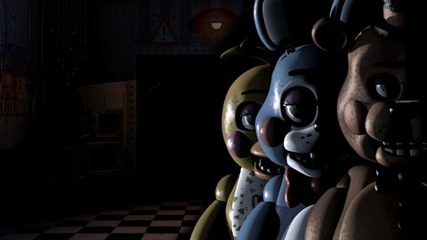

Meu 5 jogos favoritos
5. SpongeBob SquarePants: Creature from the Krusty Krab
Eu não conheço uma pessoa que tenha jogado este jogo, esse jogo marcou muito a minha infancia, por conta de sua historia engraçada e você podia joga com varios personagens, nada melhor do que jogar com o Plakton correndo de um hamburguer de siri gigante.
4. Five nights at freddy's 2
Teve uma epoca da minha vida que fui muito viciado em FNAF, johuei e zerei os 4 primeiros, ai em diante não fui curtindo o rumos dos proximos jogos, mas ainda sim, consideros os primeiros jogos, com o destaque para o FNAF 2 pra mim é o melhor porque pra mim é foi o mais dificil, com varias outras telas, com varios niveis, e gosto muito do lance com as mascara e laterna. Aguardo ansioso pelo filme final do ano.
3. Guitar hero |||: Legends of rock
O jogo que mais joguei no play 2, sempre fui viciado neste jogo, já tive varias versões desse jogo, guitar hero, brasil, brazuca, versão anime, versão aerosmith, entre outras. Eu não tenho nenhum controle de play 2, mas tenho uma guitarra que dá para jogar apenas guitar hero.
2. Valorant

O jogo que mais joguei no pc, o primeiro que gastei dinheiro com skins de arminhas, valorant marcou uma epoca muito boa da minha vida, hoje eu jogo uma vez ou outra, mas sempre procuro acompanhar os campeonatos, já estive presente de ver 2 campeonatos aqui em São Paulo no ginasio.
1. Call of Duty: Black ops 2

Não podia ser outro, o jogo que mais joguei em toda minha vida, era a minha felicidade no Xbox, comecei ficando viciado no modo zumbi, depois de ficar muito bom no zuimbi, vi que não era bom no modo multiplayer, então jogava todos os dias para ficar bom no mata a mata. Com uma campanha com uma das melhores historias do COD.